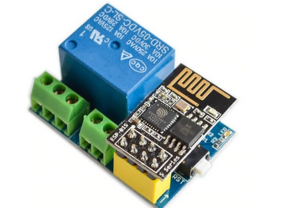

Automação do Campus Rio Pomba
Controle qualquer componente elétrico existente no campus
Automação
Sistema em que os processos operacionais em fábricas, estabelecimentos comerciais, hospitais, telecomunicações etc. são controlados e executados por meio de dispositivos mecânicos ou eletrônicos, substituindo o trabalho humano; automatização.
PWA
Progressive Web App (PWA) é um termo usado para denotar uma nova metodologia de desenvolvimento de software. Ao contrário dos tradicionais aplicativos, um Progressive Web App pode ser visto como uma evolução híbrida entre as páginas da web regulares (ou sites) e um aplicativo móvel.

ESP 01
O ESP-01 é um módulo wireless, de baixo custo, desenvolvido para conectar, de forma fácil e eficaz, um microcontrolador a uma rede WiFi.